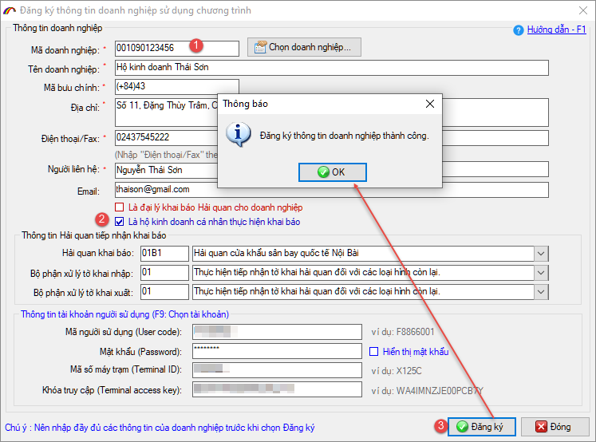
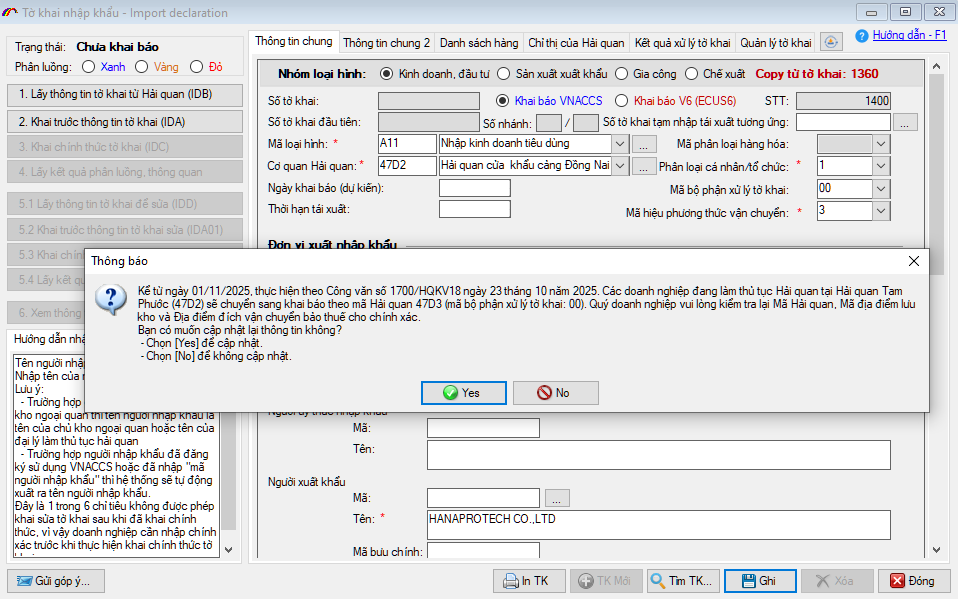
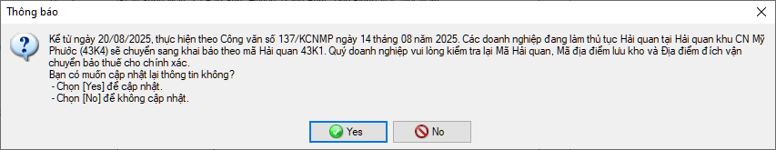

NHỮNG THAY ĐỔI TRÊN BẢN ECUS5VNACCS 2018
(Phiên bản update 22/10/2025)
Phần mềm ECUS5VNACCS2018 - Ngày phát hành 05/11/2025 | Version 6.0.190 | Lastupdate 22/10/2025 | Phiên bản CSDL 302
Phiên bản cập nhật ngày 22/10/2025 được phát hành ngày 05/11/2025 sửa đổi bổ sung một số chức năng, nhằm đáp ứng yêu cầu nghiệp vụ . Các chức năng được sửa đổi, bổ sung cụ thể như phần chi tiết dưới đây:
- 1. Cho phép đăng ký thông tin sử dụng phần mềm theo số CCCD - đối với Hộ kinh doanh, cá nhân.
Phần mềm bổ sung cho phép Hộ kinh doanh, cá nhân đăng ký sử dụng phần mềm theo số CCCD. Khi đăng ký, bạn cần đánh dấu tích chọn vào mục: Là hộ kinh doanh cá nhân thực hiện khai báo, sau đó nhập thông tin theo số CCCD (Lưu ý: Nếu đăng ký thông tin bằng MST thì bạn không đánh dấu tích chọn ở mục này).

- 2. Thông báo cảnh báo chuyển mã Hải quan khi báo đối với mã Hải quan 47D2 (chuyển về 47D3)
Kể từ ngày 01/11/2025, Thực hiện theo Công văn số 1700/HQKV18-CNTT ngày 23 tháng 10 năm 2025. Các doanh nghiệp đang làm thủ tục Hải quan tại Hải quan Tam Phước trước đây (47D2) sẽ chuyển sang khai báo theo mã Hải quan 47D3 (mã bộ phận xử lý tờ khai: 00).
Như vậy, từ ngày 01/11/2025 khi doanh nghiệp chọn mã Hải quan (47D2) hoặc Mã địa điểm lưu kho / Địa điểm đích vận chuyển bảo thuế là các mã: 47D2W01, 47D2RD2 hoặc 47D2OZZ). Lúc ghi tờ khai, phần mềm sẽ hiển thị thông báo như dưới đây:

- 3. Thông báo cảnh báo chuyển mã Hải quan khi báo đối với mã Hải quan 43K4 (chuyển về 43K1)
Kể từ ngày 20/08/2025, thực hiện theo Công văn số 137/KCNMP ngày 14 tháng 08 năm 2025. Các doanh nghiệp đang khai báo tờ khai tại Hải quan 43K4 sẽ chuyển sang khai báo theo mã Hải quan 43K1.
Như vậy, từ ngày 20/08/2025 khi doanh nghiệp chọn mã Hải quan (43K4) hoặc Mã địa điểm lưu kho / Địa điểm đích vận chuyển bảo thuế: 43K4OZZ). Lúc ghi tờ khai, phần mềm sẽ hiển thị thông báo như dưới đây:

- 4. Ngoài ra phần mềm còn sửa đổi, bổ sung một số tính năng khác nhằm nâng cao hiệu suất sử dụng.
Bản quyền © thuộc về Công ty TNHH Phát triển công nghệ Thái Sơn